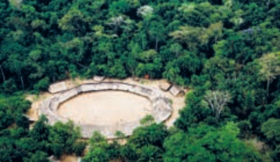
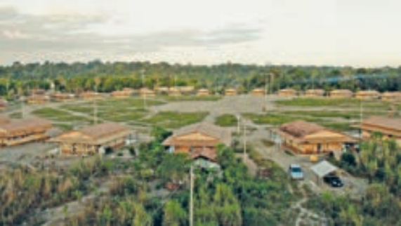

Aldeia Watoriki, Terra Indígena Yanomami, Amazonas/Roraima
Disponível em: http://www.funai.gov.br/. Acesso em: 26 ago. 2019 (adaptado).
Aldeia Gavião Parkatejê, Terra Indígena Mãe Maria, Pará
Disponível em: http://www.videosnaaldeia.org.br. Acesso em: 27 set. 2019 (adaptado).
O Supremo Tribunal Federal definiu, em 2009, os critérios para o reconhecimento de determinada terra como território indígena, sendo eles: o marco da tradicionalidade da ocupação; o marco temporal da ocupação; o marco da concreta abrangência e finalidade prática da ocupação tradicional; e, por fim, o marco da proporcionalidade, que consiste na aplicação do princípio da proporcionalidade em matéria indígena. De acordo com o marco da tradicionalidade da ocupação, para que uma terra indígena possa ser considerada tradicional, as comunidades indígenas devem demonstrar o caráter de perdurabilidade de sua relação com a terra, caráter este demonstrado em sentido de continuidade etnográfica.
Disponível em: https://doi.org/10.12957/publicum.2018.37271. Acesso em: 27 set. 2019 (adaptado).
Com base nas imagens e informações acerca dos referidos marcos para o reconhecimento de determinada terra como indígena, avalie as afirmações a seguir.
É correto apenas o que se afirma em